図解付き用語集
25項目。本文と図は通信なしで読めます。
25 · 描く位置と法線を監査して、3Dで見る
doubleで違う頂点もFloat32へ丸めると重なり、三角形が潰れることがあります。変形位置を一度丸め、その同じ点から面の向きと法線を計算します。保存原本を描画用の値で上書きしません。
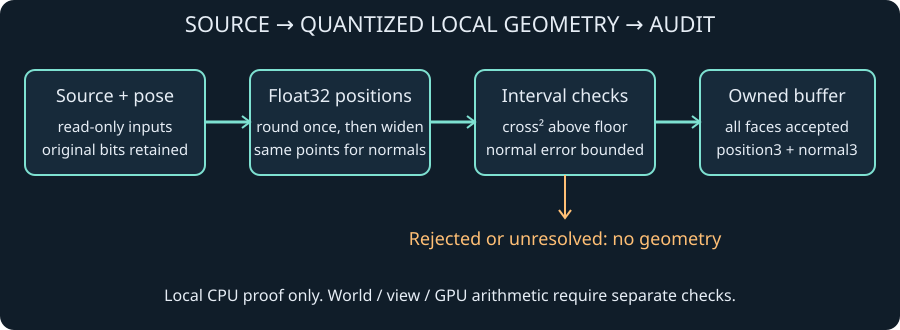
原著の局所CPU変換の概念図。実測・GPU画像ではありません。Nativeと共有WASMに同じ参照核を接続しました。原本制作ラボの「Float32位置と法線を監査」で、実スキニングの位置から手動で調べられます。丸め後のedgeとcrossを区間で囲み、cross norm squaredの下限が1e-24 m⁴を超えることを確認します。法線の各成分の誤差上限は1e-6。面積の品質不足と判定未確定を分け、失敗時に部分bufferを返しません。
監査に成功した小メッシュは、任意の「監査済みメッシュを3D表示」でWebGPUへ渡せます。同じFloat32位置と法線を使い、斜め・正面・背面の固定視点で表示します。時刻・原本・予算を変えると古いmeshを消し、視点の切替だけではC++を再計算しません。GPUを利用できない場合も数値の確認と原本保存は使えます。ゲームへの接続は後述の小カバーで統合中です。実時間性能の達成とは分けます。
監査の条件はmesh-localのCPU位置と法線についてのものです。3D表示では別にGPUのmodel・camera変換や法線normalizeが入り、CPUの誤差上限をGPU算術・画面被覆へ拡張しません。自己交差や材料損傷の完成でもありません。180度の剛体回転も法線の符号を変えるため、旧法線との内積だけを一般の反転判定には使いません。
CPU監査の契約 · 手動3D表示の条件と範囲 · 原本から監査・表示するラボ
まとめて読むと何が変わる？
同じC++の結果を1件ずつ読むsingleと、同じ種類の値をまとめて読むbatchがあります。既定はsingleです。どちらも元の形を保ち、型・順序・全bitが同じ所有データを返します。ブラウザのラボでも読出し方を選べる拡張を統合中です。1回の実行では、通常と計器付きの両方に同じ読出し方を使います。
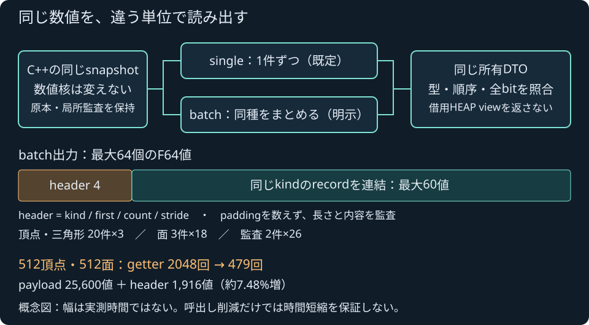
原著の交換形式の概念図。幅は時間や性能の実測値ではありません。512頂点・512面ではgetterが2048回から479回になります。一方、同じ25,600値のpayloadに1,916値のheaderが増え、転送する値は約7.48%増えます。まとめ読出しのcopy・header検査・cacheにも費用があるため、回数の削減率を速度向上率には読み替えません。
数値が一致しても、読み出す手間が同じとは限りません。同じ形と設定で両方を測り、全数値・原本・転送と後片付けを確かめます。失敗や使えない時計の値も残します。過去のsingle記録を新しい両経路の比較へ混ぜません。
ブラウザ両経路の比較は統合中で、実ブラウザ受入と公開確認は未完です。小入力の有限な計測を、実時間アニメーションやロボットへの適用の完成とはしません。読出しAPIの契約 · ブラウザ比較の条件 · 照会と転送を測るラボ
原本の姿勢を、ゲームの部品へ
プレイヤー機の背面カバーへ、6頂点・4面・2骨の独自Sourceを接続しました。移動や実際にenergyを使うboostに応じた開度からclip時刻を決め、共通C++のFK・スキニング・派生位置と法線の監査を通します。原本を上書きしたり、JSだけで頂点を曲げたりしません。
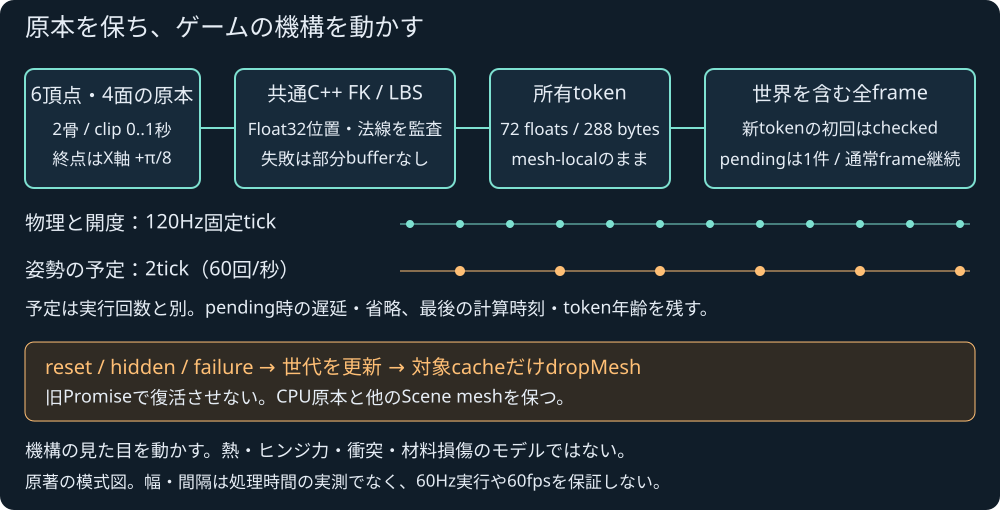
原著の処理・世代の模式図。時間や実画面の測定図ではありません。停止付近の水平speedが0.1m/s以下なら目標開度を0にし、正確なrest姿勢へ戻った後は同じ計算を繰り返しません。見た目の制御に置くidle bandで、物理速度やFK/LBSの精度を変更する処理ではありません。
物理と開度は120Hzです。姿勢の更新予定は2tickごと、毎秒60回のrequest候補ですが、実GPU更新60Hzの達成保証ではありません。GPU確認の待機中は新しい照会を積まず、保持した姿勢の年齢と遅延・省略を記録します。新姿勢の初回確認もカバーだけを別に描かず、世界を含む1枚の描画へ渡します。resetやhiddenでは旧tokenを外し、遅れて返る処理で復活させません。
実装済みで、ローカル操作を統合中です。全npm/CI・実ブラウザ・公開受入は未確定。小さいNode標本から60Hz実行や60fps達成を主張しません。機構の見た目を動かす機能で、熱・関節力・衝突・材料損傷の完成でもありません。原本と描画・未完の受入を参照してください。
↑ 目次へ戻る
24 · 形と骨を原本のまま保存する
全メッシュ・author weight・inverse bind・bind時の親とlocal rest・全motionを独立原本へ保存する。スキン原本の制作ラボでJSON/portableを読み、重みを編集して同じ共通C++へ照会できる。
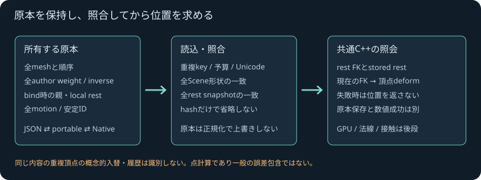
原著の形式・照会経路の概念図。測定ではない。hashは非暗号の索引で、全頂点・三角形と観測可能な配列順の比較を省略しない。同じworldになる親編集もlocal snapshotで拒否する。重複JSONキー・非有限値・非零decimalのzeroへのunderflowを拒否し、weightとinverseの-0を保持する。
構造保存と数値completedは別。既存Native CLIとの原本往復を扱い、派生Float32位置と法線は別ボタンで監査できる。GPU・接触・材料損傷の完成とはしない。同内容の重複頂点の概念的入替や履歴は識別できない。形式とAPIを参照。
制作・モーション / 基礎 / 前提: 骨の行列、頂点の位置
骨で頂点を動かす Linear blend skinning
骨の線だけでなく、表面の頂点も姿勢に合わせて動かす計算です。各頂点に骨のIDと重みを持たせ、rest姿勢を取り除く逆行列と、現在の骨の行列を組み合わせます。原本の頂点・重みはそのまま残します。
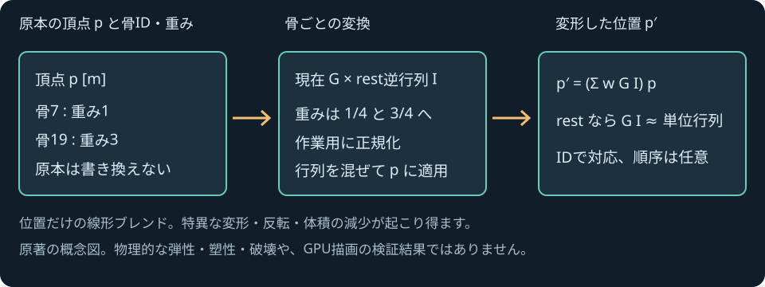
原著の概念図。物理的な損傷やGPU実行結果の図ではありません。たとえば重み1と3なら、作業用には1/4と3/4へ正規化します。2つの変換後の点が(2,0,0)mと(0,2,0)mなら、混ぜた点は(0.5,1.5,0)mです。restと同じ姿勢では元の頂点へ戻ることを確かめます。非一様scaleのshearも行列で保持します。
mesh localとskeleton座標が同じ条件の位置計算核を、Nativeと共有SDKの実WASMで使います。帯を曲げる・weightと数値の失敗を調べるラボを追加しました。原本bindingの保存とNative往復は原本の制作ラボで扱い、原本ラボには手動のFloat32/flat法線監査を接続し、ゲームやGPU描画は後続です。入力域と数値の契約。骨とキーの操作ラボはFKのjoint線表示で、メッシュ変形のデモとは区別してください。線形ブレンドは体積の減少や特異な形を作ることがあり、材料の弾性・塑性・破壊を計算するものではありません。
↑ 目次へ戻る
時間・シミュレーション / 入門 / 前提: 秒、位置、速度
固定刻み Fixed timestep
世界を一定の時間幅で進める方法です。絵を描く間隔が変わっても、移動距離やゲームのルールが変わらないようにします。たとえば速度が6m/sなら、1/120秒ごとの移動量は0.05mです。
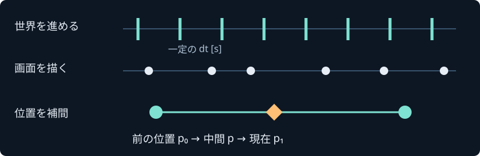
自作の概念図。tickは世界を1回更新すること。青い線と白い丸の数は同じでなくて構いません。dt（デルタ・ティー）は「今回進める秒数」。補間（Interpolation）は既に計算した2つの位置の中間を求めることです。前の位置をp₀、現在をp₁、割合をαとすると、p = (1−α)p₀ + αp₁。αは単位なしの0〜1です。この方式の表示にはおおむね1 tickの遅れがあります。
// 教材用の概念コード。呼び出せるエンジンAPIではありません。
accumulator += elapsedSeconds;
while (accumulator >= fixedDt) {
previous = current;
current.position += velocity * fixedDt;
accumulator -= fixedDt;
}
draw(lerp(previous, current, accumulator / fixedDt));
処理落ち後の無制限な追いつき更新は別の停止を招きます。更新回数の上限と、失われた時間の記録が必要です。「固定刻み」だけで物理が常に安定するわけでも、異なるCPUで完全一致するわけでもありません。
実装との対応: FixedClock / FrameLog。ブラウザ本体は120Hzの固定更新と、上限超過時に失われた時間の記録を持ちます。教材の実例は炎の30/60/120fps比較。関連語: フレーム時間、周波数とエイリアシング。
↑ 目次へ戻る
描画 / 入門 / 前提: 3D座標、三角形
レンダラー Renderer
世界の形と材質、光源、カメラから画面の色を作る部分です。最初の試作では、立体を三角形へ分け、カメラから見た平面へ投影します。GPUは多数の小さな計算を並列に行う装置で、そこへ渡す計算のプログラムをシェーダーと呼びます。
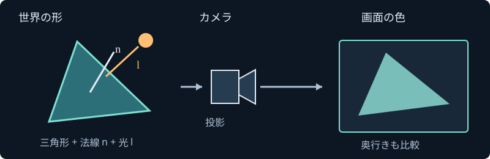
自作の概念図。投影は立体を画面へ写す操作。見えない奥の面は、深さを比較して隠します。単純な拡散反射の教材式は、明るさ ∝ max(0, n・l)。nは表面に垂直な単位ベクトル（法線）、lは表面から光源へ向かう単位ベクトルです。どちらも長さ1、内積n・lは単位なし。正面から光が来ると1、真横からだと0になります。複雑な反射、影、間接光はこれだけでは表現できません。
色の計算は線形な光量で行い、表示用の変換を最後に行う必要があります。簡単なライティングが動いても、測定単位を備えた物理的な光学モデルが完成した意味にはなりません。
実装との対応: ブラウザ版のRendererはWebGPUへ直接描画し、WGSLという言語で光の計算を記述します。直接光には、表面を微小な鏡の集まりとして近似するGGX分布と拡散反射を使います。環境光は定数による近似で、影・間接光の伝搬・参照計算との精度比較は未対応です。粗さや明るさの値は試作用の仮定です。Windows版のDX12ビューアはコンパイル・起動済みですが、面ごとの色付けによる簡易描画で、ブラウザ版と同じ光学品質ではありません。教材図はGPU実行結果ではありません。関連語: フレーム時間。参照: W3C WebGPU、W3C WGSL（草案の版と限界は参照台帳を確認）。
↑ 目次へ戻る
音響 / 入門 / 前提: 距離m、時間s
音の距離と到達時間 Attenuation & propagation delay
音は瞬間に届きません。距離d[m]、音速c[m/s]なら到達時間はd/c[s]です。この教材では静かな一様な空気に対してc=343m/sを仮定します。34.3m離れた音は0.1秒後に届きます。気温などが変われば音速も変わります。
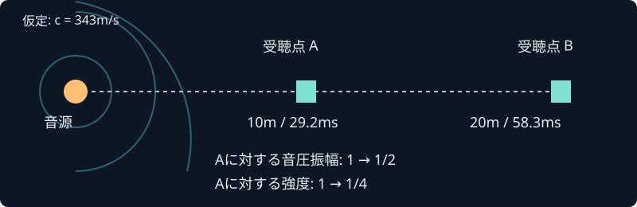
自作の概念図。壁・風・吸音なしの点音源を仮定。小さな円は音の広がりを表し、実測の波面ではありません。反射する壁がなく、点音源を遠くから聞く場合、同じ音のエネルギーが半径dの球面（面積4πd²）へ広がります。そのため音の強度は1/d²に比例し、音圧の振幅は1/dに比例します。音声サンプルへ掛ける振幅ゲインを、強度と混同しないでください。
τ = d/c [s] g(d) = r₀ / max(r₀, d)
τは遅延、gは単位なしの振幅ゲイン、r₀は基準距離（ここでは1m）。このgは近距離で無限大になるのを防ぐゲーム用近似で、音源のそばの正確な物理モデルではありません。空気吸収、遮蔽、反射、回折、指向性、移動によるドップラーは別の計算です。
実装との対応: propagation / SpatialAudio。最小の直接音を手続き音源に適用します。実際の再生遅延には3秒の上限を設けています。左右の音量差はステレオパンの近似で、耳や頭の形による両耳化ではありません。再生装置の耳元音圧の校正は未対応。関連語: 時間刻み。参照: NASAの音速教材。343m/sはこの教材の仮定値です。
↑ 目次へ戻る
性能 / 入門 / 前提: ミリ秒（1ms = 0.001秒）
フレーム時間 Frame time
1枚の更新に使った時間です。60fpsの予算は1000/60 ≈ 16.67ms。平均だけでなく、戦闘や読込み中の遅い1枚も調べます。下の図では3枚目だけ予算を超えています。
自作の例示グラフ。実機の測定結果ではありません。色に加えて「!」でも超過を示しています。p95は、時間を小さい順に並べたとき95%の位置にある値。p99は99%の位置です。最大値・超過件数・生ログも一緒に残します。CPUとGPUは並行するため、単純に処理時間を足してfpsを求めることはできません。
ブラウザのrequestAnimationFrameは描画機会に合わせたコールバックです。その呼出し回数だけでは、ディスプレイへ実際に提示された枚数やGPU時間を証明できません。非表示タブでは更新が制限されることもあります。
処理の内訳を調べるときも、時計や観測用wrapper自体の負荷があります。派生メッシュのNode段階計測は、同じ入力の全数値が変わらないことを確かめ、計測あり・なしの全試行を別に残します。C++呼出しには交換やsnapshot更新も含み、未分類の残り時間を純粋なJS時間とは呼びません。Nodeの値を実GPUやゲームのfpsへ換算しません。
性能状態: エンジン全作品での60fps維持は未検証です。実機、解像度、品質、負荷、測定区間を固定した試験が必要です。
関連語: 固定刻み。参照: WHATWG HTML: イベントループと描画機会。確認 2026-11-03。
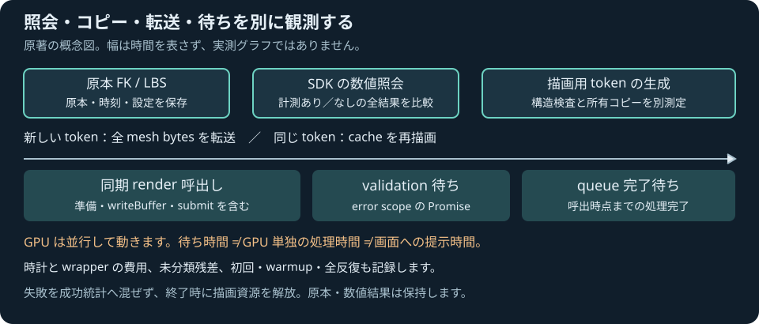
原著の概念図。幅は実測時間を表しません。ブラウザで照会と転送を測るラボでは、小さい形の初回転送と同じ形の再描画を別々に調べます。計算結果の全数値を照合し、失敗や無効な時計の値を成功統計へ混ぜません。終了時に描画資源を解放し、GPUを使えない場合も数値と原本を保存します。測る範囲と条件を確認してください。単件とまとめ読出しの比較拡張は統合中です。同じ読出し方の通常・計器付きを一組にし、過去記録とは分けます。両経路の比較条件と現在の状態も参照してください。
↑ 目次へ戻る
モデリング / 入門 / 前提: 3D座標、三角形
メッシュと頂点編集 Mesh & vertex editing
メッシュは、形を決める点（頂点）と、点をつなぐ三角形の集まりです。点の番号を参照して面を保存すると、ひとつの点を動かすだけで、それを共有する面が一緒に変わります。
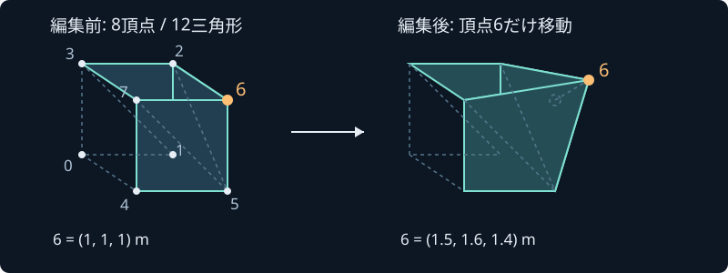
自作の概念図。頂点の位置はm。面のつながりを保持した編集で、物理的な材料損傷の計算ではありません。頂点・面・法線・境界箱の説明と、実際に動くCLI例へ →
実装: mesh.mjs。箱の生成・頂点移動・検査・保存を提供。塑性変形、材料破壊、流体荷重による損傷は未実装。関連語: レンダラー、性能予算。
↑ 目次へ戻る光学 / 基礎 / 前提: 光線、距離、球
レンズ面と開口 Lens surface & aperture
球面レンズの面は、球全体と同じではありません。頂点側の半球と開口内だけを残し、光線との交点を近い順に調べます。近い交点が反対の半球や開口の外なら、遠い交点も調べる必要があります。
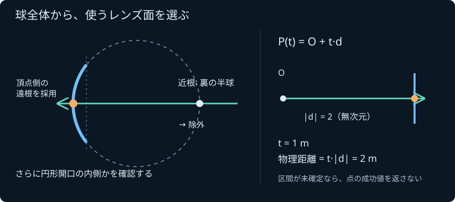
自作の模式図。交点の概算位置と、計算が保持する区間は区別します。光線の式がP(t)=O+tDなら、Dの長さが1でない場合の実距離はt|D|です。接線や開口の端を丸めで確定できない場合は未解決を返します。原点を黙ってずらして自己交差を飛ばすこともしません。
形状と開口を実WASMで調べる →
入力域・区間・根の順序と独立検証。この段階は単一面の幾何で、複数レンズ、分散、ゴーストやフレアの画像生成は後続です。
↑ 目次へ戻る
光学 / 基礎 / 前提: 屈折、波長
波長によって屈折率が変わる Dispersion
材質の位相屈折率nが波長によって変わると、同じ面でも曲がる方向が変わり、色収差につながります。真空中の波長λに対し、群屈折率はng=n−λdn/dλです。屈折方向と群遅延で、この二つを使い分けます。
 独自の模式図。実材質の測定値ではありません。
独自の模式図。実材質の測定値ではありません。計算精度を上げても、モデルの有効波長帯や係数の測定誤差は消えません。計算核は波長帯全体を包含し、特異点や正の屈折率を保証できない場合は未解決を返します。
合成モデルを実WASMで調べる → · 数式と独立検証
現在は分散の独立核。複数面のレンズ画像や色収差・フレアの描画は後続です。
↑ 目次へ戻る
制作 / 基礎 / 前提: 座標、回転、秒
骨とキーの編集 Skeletal motion authoring
骨の局所位置・回転・scaleを時刻つきのキーとして保存し、親子階層から世界姿勢を求めます。選択した骨とキーだけを更新し、IDや未編集のtrackを保持してUndo/Redo・保存読込できます。
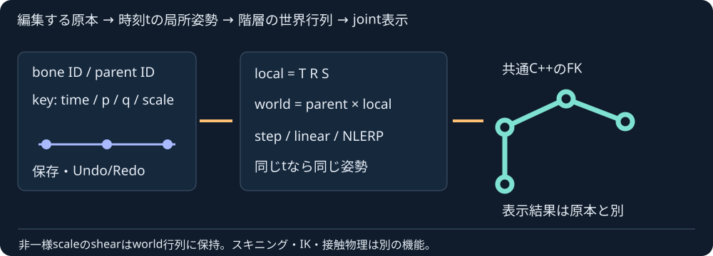
原著の概念図。編集原本と共通C++の姿勢結果を区別します。骨とキーを編集して再生する →
回転は最短経路NLERPで、定速SLERPではありません。非一様scaleによるshearはworld行列のまま保持します。骨の線画による制作入口であり、メッシュのスキニング、IK、接触・物理制御の完成とは区別します。階層とTRSの一次資料を比較して独自に実装し、glTF互換の入出力とはしていません。
↑ 目次へ戻る
光学 / 応用 / 前提: 光束、指定光路、偏光
有限光束とレンズ経路 Finite lens packet power
各単色実験の光束P Wを有限個のpacketへ正確に等分し、主透過と指定した最初の内部反射を別々にセンサーへ照会します。幾何の重みを光量とみなさず、偏光状態と明示したワット数を運びます。
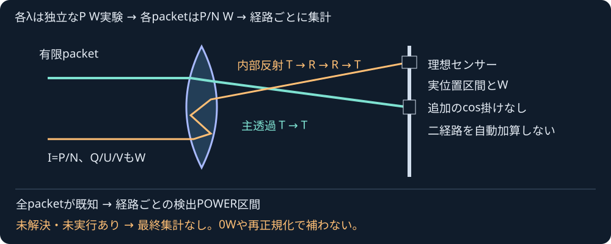
原著の概念図。色・太さは輝度画像や測定パワーではありません。有限光束とセンサー開口を調べる →
二経路や波長間の自動加算、照度画像、連続瞳の収束保証、全ghost・媒質配置の自動証明は行いません。理想センサーは到達POWERを数え、透過係数に含まれる余弦を二重に掛けません。原入力・測度・モデル・検証を参照してください。
↑ 目次へ戻る
光学 / 応用 / 前提: 反射、偏光、区間
偏光を引き継ぐ経路 Polarized power route
次の面の入射面が変わると、同じ偏光でもs/p成分は変わります。世界XYZの複素coherencyを保持して、反射・屈折の振幅と全反射の位相差を面ごとに引き継ぎます。
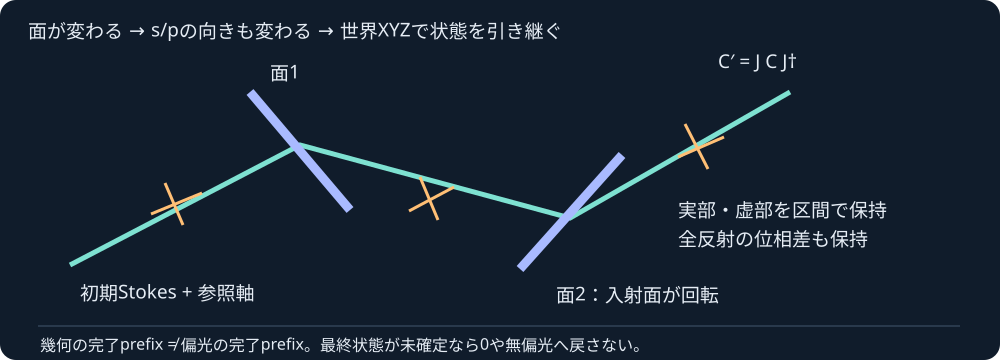
原著の概念図。色・太さは輝度ではありません。二反射・二TIRと偏光POWERの区間を調べる →
各面で無偏光へ戻すモデルではありません。幾何が進んでも偏光が未確定なら最終行列は空のままです。一本の光路内の相対位相と、別光路間の干渉・回折は区別します。表示は入射パワー1に対する比で、画像の明るさや光源の絶対Wへの変換は別の機能です。
↑ 目次へ戻る
光学 / 応用 / 前提: 光路、波長、区間
レンズの幾何スポット Geometric lens spot
同じ瞳の標本から発射した光線が、指定したセンサーのどこへ届くかを調べます。開口・センサー位置・入射方向を変え、波長ごとの位置区間や重心、RMS²の広がりを比較できます。
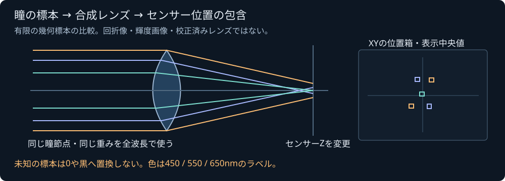
自作の概念図。色は波長ラベルで、明るさや回折像ではありません。明示的に計算するスポット参照ラボ →
有限の等面積瞳標本と指定した屈折面列の幾何参照です。位置中央値は図の表示だけに使い、統計は実C++の包含を表示します。未解決・未実行がある場合は最終統計を空のまま保ちます。連続した瞳全体の積分保証、輝度画像、波動PSF、回折・ゴースト・実測レンズの完成とは区別します。
↑ 目次へ戻る
光学 / 発展 / 前提: 面交差、区間、開口
最初に当たる面を選ぶ Nearest optical surface
面の順番をあらかじめ指定するだけでは、手前に別の面がある場合の遮蔽を判断できません。全候補を調べ、すべての原入力光線が同じ一つの面に最初に当たると確認したときだけ最近傍を返します。
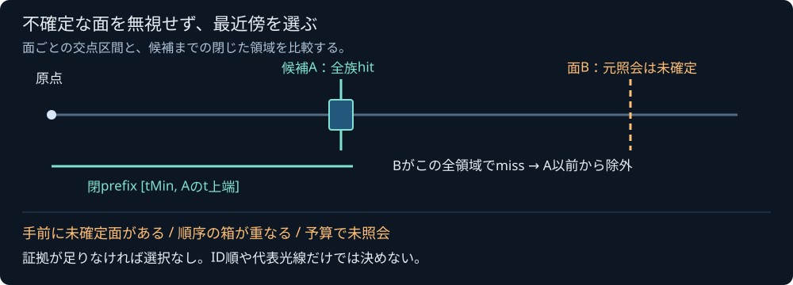
独自の概念図。代表光線だけから全族の最近傍を証明しません。奥の面の元照会が未確定でも、候補の交点区間上端までの閉prefix全体でmissなら、それ以前から除外できます。手前の開口に一部だけ当たる族や同時面は、根拠なく奥の面を選びません。共有原点による相関を個別箱が失う場合も未解決を残します。
面・開口・prefix・予算を実WASMで比較する → · 指定面列の継続との違い
初段は幾何の一意な最近傍選択です。tMinより前の遮蔽、媒質トポロジー、自動反射/屈折継続、全ゴースト探索・撮像の完成とはしません。
↑ 目次へ戻る
光学 / 発展 / 前提: 面の交差、屈折率、偏光
誤差区間を次の面へ運ぶ Prescribed optical route
面ごとの交点や方向を概算点へ戻すと、次の面での誤差保証を失います。光路の計算は位置・法線・屈折方向・屈折率の区間を引き継ぎ、指定した面列の全段が成功したときだけ最終光線を返します。
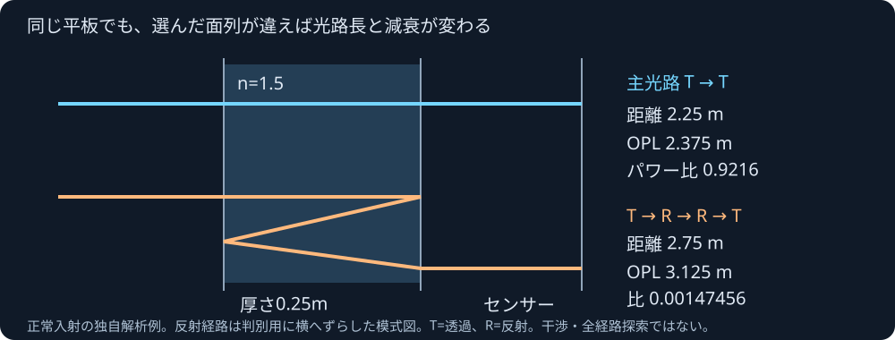
独自の模式図。反射経路は見分けるためにずらしています。反射を増やすと、距離と光学距離Σn·dsも変わります。各面で光を無偏光に戻して平均係数を掛けると、減衰を誤ることがあります。この初段は任意偏光を覆うs/p係数の幅で総パワーを囲みます。
曲面・分散・二回反射を実WASMで調べる → · 面列・包含・解析例の契約
指定面列の照会であり、未指定面の遮蔽や自動nearest探索、全ゴースト列挙、撮像・回折・干渉の完成ではありません。
↑ 目次へ戻る
物理 / 発展 / 前提: 力と加速度、接触法線
接触を支える反力 Normal support reaction
接触が続く物体には、衝撃の瞬間のimpulseだけでなく、重力や保持された外力を支える反力が必要です。接近中を小さな速度だから静止と丸めず、支持・離反・衝撃を分けて調べます。
 独自の合成荷重の解析例と運動学の模式図。
独自の合成荷重の解析例と運動学の模式図。球対の中心間距離には相対接線速度の項|u_t|²/dが入ります。球上の物質点の向心加速度とは別で、回転球の平面支持へrω²を差し引きません。解は力と加速度の相補条件と残差も確認します。
荷重・曲率・予算を実WASMで調べる → · guardモデルと独立検証
現在姿勢のread-only照会です。gap帯内の正gapも近似境界となり得ることを明示します。この照会では時間を進めません。支持を保つ運動は別のW2ラボで扱い、摩擦支持は未完成です。
↑ 目次へ戻る
光学 / 発展 / 前提: 反射率、方向と基底
偏光を次の面へ引き継ぐ Polarization transport
無偏光の光も、境界で反射すると偏光する場合があります。その光を次の面へ運ぶときに再び無偏光として平均すると、反射量が変わってしまいます。光の進行方向と二つの横軸を一緒に保存し、面が変わるときは成分を新しい基底へ変換します。
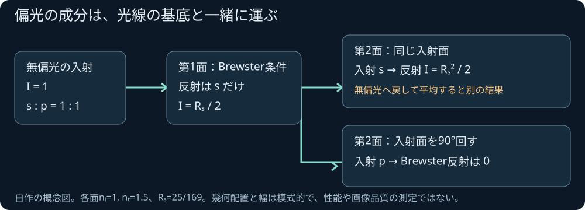
自作の二面の比較例。偏光を毎回平均してリセットしない理由を示します。StokesのIはパワー、Q/U/Vは偏光の成分です。全反射ではパワーが1でも、sとpの位相差が変わり、直線偏光が楕円偏光になる場合があります。
符号規約・基底・独立した電磁界境界の検証。この計算は通常doubleの近似です。分岐した別光路の共通位相や相関は保持せず、干渉・薄膜・回折の完成にはしません。
↑ 目次へ戻る
時間・物理 / 発展 / 前提: 支持反力、衝撃、区間演算
支えながら動かす Supported World step
床や積み重ねを支える反力を求めるだけでは、次の時刻の位置と速度は決まりません。接触を保つ区間を拘束積分で進め、新しい衝撃や離脱を扱い、残りの時間を計算します。
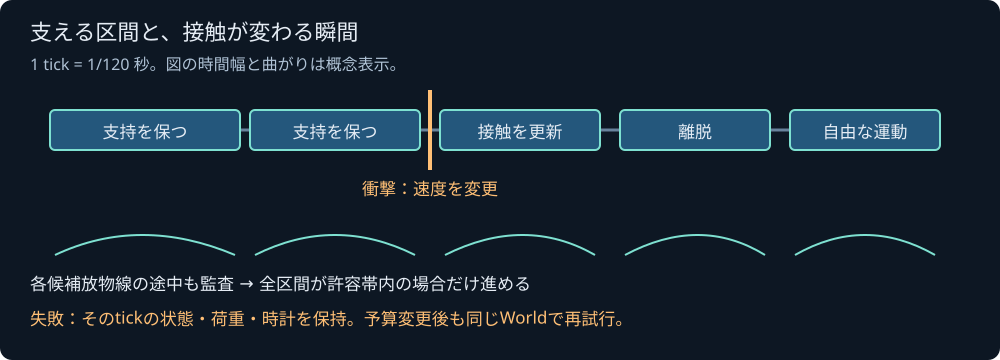
原著の概念図。内部時間幅と軌跡は説明用です。球面では法線が変わり、端点が安全でも途中の経路が障害物を通過する場合があります。定義した候補放物線の全区間を区間演算で調べる幾何監査と、粗い1歩・細かい2歩の差による精度推定を区別します。真の連続運動を厳密に囲む積分器とは称しません。
支持・衝撃・離脱を手動120Hzで調べる → · 候補軌道の監査契約
摩擦0の球proxyと静的平面の有限刻みモデルです。一般形状と摩擦支持は未完成。失敗時は全状態・保持荷重・時計を保ち、同じWorldで再試行できます。反力だけのread-only照会も残しています。
↑ 目次へ戻る
時間・物理 / 発展 / 前提: 加速軌道、力積
衝突応答と残りの時間 Continuous World step
衝突する時刻が分かったら、その直前まで全物体を進め、力積で速度と角運動量を変えて残りの時間を計算します。1tick内で何度も跳ね返るときも、外力やトルクは全区間に保ち、成功した最後に一度だけ消費します。
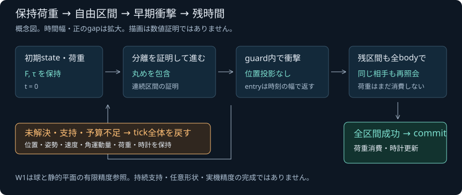
自作の処理の模式図。時間幅だけでなく距離の誤差も確認して応答します。複数衝突と失敗時の状態保持を実WASMで調べる →
現在のW1は球proxyと静的平面の衝撃モデルです。誤差の範囲内で少し早く応答するモデルを明示し、接線・初期境界・静止支持を未対応のまま成功扱いしません。契約・予算・独立解析・残る支持モデル。
↑ 目次へ戻る
時間・物理 / 基礎 / 前提: 二次軌道、区間演算
加速軌道の入口 Accelerated entry bracket
重力や一定の外力があると、位置は p(t) = p₀ + v₀t + ½at² に従います。高さ3m、半径1mの球を加速度−4m/s²で下げる例では、床に初めて接するのは1秒後です。
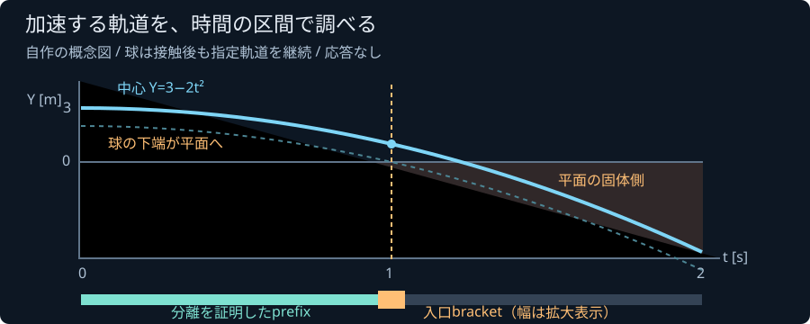
自作の概念図。説明のため時間区間を拡大してあり、実行時の誤差幅の測定値ではありません。式を時間区間ごとに外側から囲み、正ならその範囲を除外します。先行区間の分離と、正の左端・負の右端を確認して、最初の入口を幅のある時刻で返します。接線や予算不足で証拠が足りない場合は「未解決」です。
加速度・時間幅・評価予算を実WASMで変える →
時間の許容幅は、そのままメートルの誤差ではありません。衝突後の応答や持続接触を解くWorldへの接続も別の工程です。式・入力域・独立検証、区間で囲む考え方を参照してください。
↑ 目次へ戻る光学 / 基礎 / 前提: 方向、入射角、光のパワー
境界で反射・屈折する光 Dielectric interface
光は媒質の境界で向きを変え、反射と透過に分かれます。単純な非吸収の平面で屈折率1から1.5へ垂直に入射すると、反射パワーは4%、透過は96%です。これは同じ条件での電場振幅や、描画に使う放射輝度の倍率とは区別します。
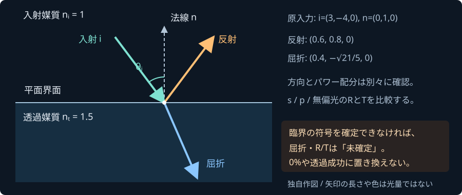
自作の方向の模式図。色や矢印の太さは光量・波長色を示しません。Snell則で屈折方向を、Fresnel式で偏光ごとのパワー比を求めます。臨界付近の分類は原入力から区間を作って調べ、符号が分からない場合には屈折方向とパワーを未確定のまま返します。
入射角・屈折率と全反射を実WASMで調べる →
方向とパワーは数値近似です。指定波長における屈折率を入力しますが、波長を変えるだけで分散を自動生成しません。多面レンズ・収差・ゴースト・フレア・回折は次の段階です。モデル・契約・独立検証を参照してください。
↑ 目次へ戻る数学・物理 / 基礎 / 前提: 数の範囲、零
数値を区間で囲む Interval enclosure
計算機の小数計算には丸めがあります。最後の答えを少し広げるだけでは、途中で消えた小さな値を取り戻せません。たとえば二進数の倍精度で (2⁵³ + 1) − 2⁵³ を順に計算すると0になり得ますが、実数としての答えは1です。
区間演算では各段階で下限と上限を外側へ広げ、指定した入力範囲の答えを含むようにします。計算環境の丸め方や、非常に小さな数の扱いも、この保証の前提です。
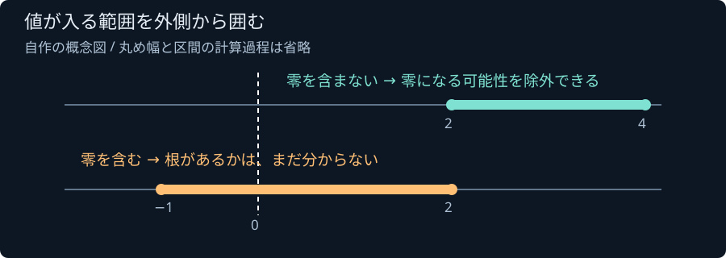
自作の概念図。区間の例示値であり、接触判定や性能の測定結果ではありません。接触の式をある時間範囲で囲み、その下限が正なら、その範囲では接触しないと判断できます。零を含む場合は、接触する場合も、区間が広すぎる場合もあります。範囲の分割や、根が存在することの別の確認が必要です。同じ変数の繰返しは区間を広げることもあります。
実装: C++区間演算と環境条件・式・独立検証。現段階は加速軌道の安全な照会に向けた計算基盤です。既存の一定速度TOIやWorldを、自動で保守的CCDへ置き換えるものではありません。
球と三角形の最も近い点を囲む
有限な三角形と球を調べるには、中心に最も近い点qを面だけでなく辺・頂点にも探します。距離をd、半径をrとするとgap=d−r。無限平面には近くても、三角形の外なら離れていることがあります。
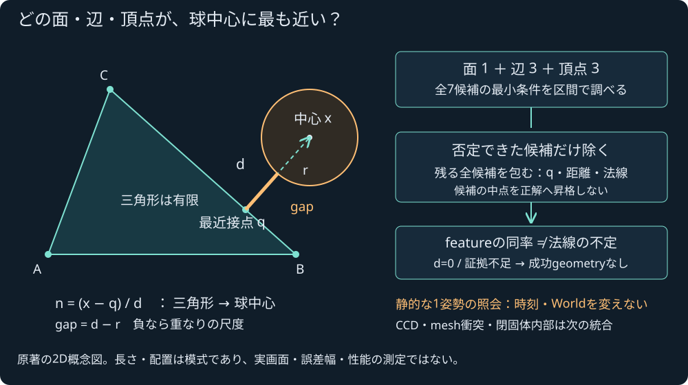
原著の2D概念図。実画面・誤差幅・性能の測定ではありません。最小条件を区間で調べ、否定できない候補は全部残します。面と辺の名前が同率でも、共有する最近接点の法線まで不定とは限りません。d=0や証拠不足では法線を作らず、失敗の診断を成功geometryへ変えません。
同じC++の瞬間照会を共有WebAssembly SDKへ接続しました。面・辺・頂点の候補とgeometryは所有copyで返し、品質不足ならgeometryはnullのままです。入力・全候補・失敗を操作する照会ラボ、JavaScriptの使い方と失敗の扱い、統合・公開の検証記録。入力・時刻・Worldは変えません。ゲームのmesh衝突、CCD、閉固体の内部、隣接面、摩擦支持や損傷は次の統合です。モデルと品質条件。
複数の面で、最も近い可能性を残す
全ての面の距離が区間で得られたとき、最小距離も「下限の最小から上限の最小」で囲めます。他の面より遠いと証明できない面は全部残し、同率や区間の重なりをID順で1面へ決めません。
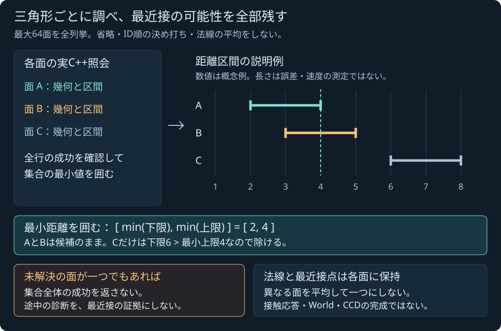
原著の概念図。幅や数値は実行結果・誤差幅・性能の測定ではありません。最大64面を全列挙するNative集合照会をローカル受入しました。公開CI/Pagesは未確認です。未解決の面があれば集合全体のnearestを成功にせず、各面の最近接点や法線を平均しません。World・ゲーム接触へは未接続です。
集合照会の共有SDK接続をローカル受入しました。全入力の所有copyを分割して準備し、入力stageと直前の確定結果を別に保ちます。有界交換の原著概念図。新74-export版の数値照合と独立参照を確認し、公開CI/Pagesは未確認です。World・ゲーム接触には未接続です。
↑ 目次へ戻る時間・物理 / 入門 / 前提: 距離、速度、秒
途中の接触時刻 Time of impact
更新の終点で離れていても、途中で接触していることがあります。中心距離3m、半径0.5mの球2個で、一方が相手へ1000m/sで進むと、最初の接触は2ms後。1/120秒（約8.333ms）後には通り過ぎ、再び離れています。
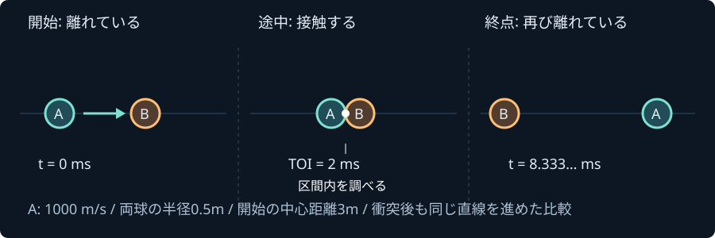
自作の一定速度の例。比較のため衝突後も同じ直線を進めています。衝突応答を解いた運動ではありません。|r₀ + v_rel t|² = (r_A + r_B)²
相対位置と相対速度から、照会区間内で最初に表面が接する時刻を求めます。初期重なり、初期接触、離反、接線、数値的に不確かな境界も区別します。
同じC++ WebAssemblyで接触時刻を調べる →
この核は一定速度・固定半径の球と、法線が一定の移動平面を扱う幾何照会です。重力・外力・回転する形状・衝突後応答・一般Worldの連続衝突は別の統合項目です。丸めの診断フラグは厳密な区間証明ではありません。式・検証・数値領域、固定刻みも参照してください。
↑ 目次へ戻る流体・物理 / 入門 / 前提: 体積m³、質量kg、力N
浮力と静水圧 Buoyancy & hydrostatics
水圧は深い場所ほど大きくなり、物体へ上向きの浮力を生みます。密度一定の水では、浮力は押しのけた水の重さと一致します。箱の質量を変えることと、水面下の体積を変えることを分けて観察しましょう。
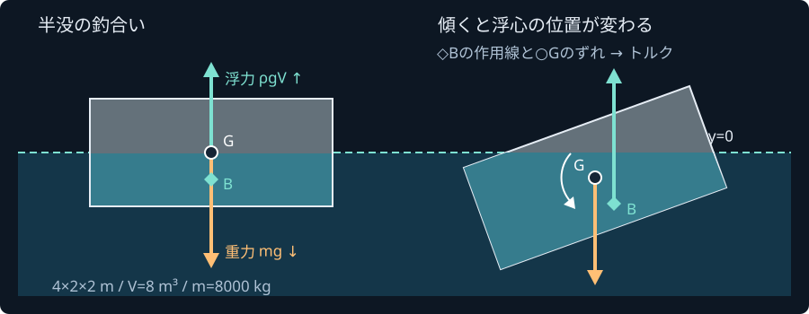
自作の概念図。指定した姿勢における静的な力を扱います。箱が自動で浮沈する運動や、CFDを解くものではありません。姿勢を指定して力を調べる浮力ラボ →
C++ WebAssemblyで運動を進める浮遊体サンプル →
共通の静水圧計算を実使用。流れ、波、圧縮性、船殻損傷は未対応。本文と図はfile://で読めます。計算デモはHTTP/HTTPSが必要です。
↑ 目次へ戻る